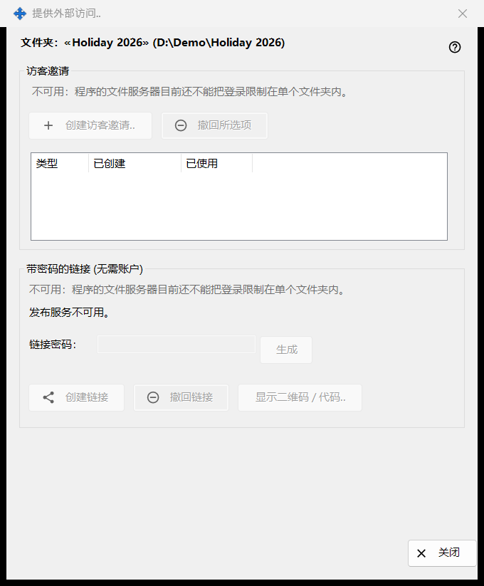
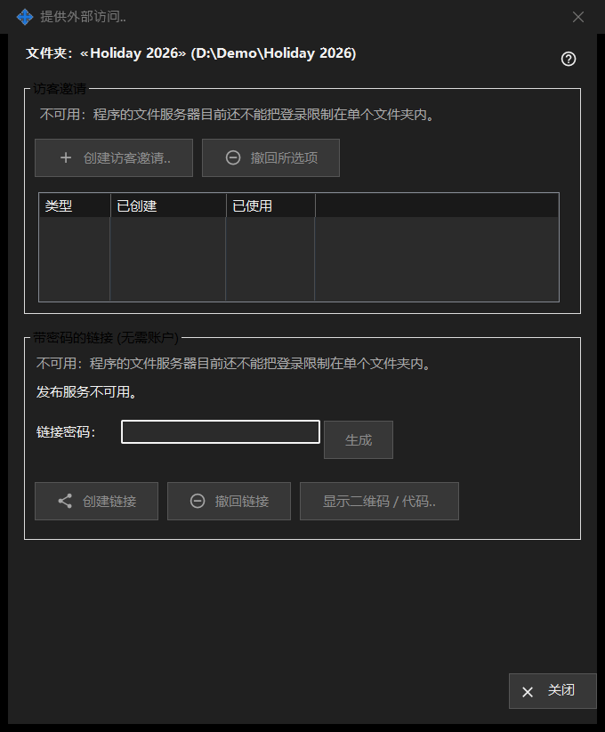

提供外部访问
用途说明
控制你自己设备之外的人对某个共享文件夹的访问：访客邀请，或无需账户的带密码链接。它从 Share Manager 主窗口针对所选文件夹的「提供外部访问..」按钮打开。在此版本中，创建新访问的控件处于关闭状态，窗口会显示原因，而已存在的访问仍可撤回。


操作顺序
- 阅读带有文件夹名称和路径的标题行。
- 在每个分组中阅读原因行；只要它显示，就无法创建任何新内容。
- 要移除访问，请选中一个邀请并点击「撤回所选项」，或点击「撤回链接」。
- 点击「关闭」（Escape）离开。
界面元素
文件夹和状态
粗体行给出文件夹名称及其路径。底部的状态行报告最近一次的结果。当发布服务未运行时，窗口显示「发布服务不可用。」，其按钮处于关闭状态。
访客邀请
该分组包含「创建访客邀请..」、「撤回所选项」，以及一个列出此文件夹访客邀请的列表，列有类型、创建时间和已使用。撤回会移除邀请；不会删除文件夹或其文件。
带密码的链接（无需账户）
状态显示「未创建链接。」或「链接有效。」。「链接密码：」文本框是遮蔽的，「生成」会填入它。链接有效时，「创建链接」变为「更新链接」。「撤回链接」会先询问，因为该链接上的每个活动会话都会结束。「显示二维码 / 代码..」把链接显示为代码。
为何无法创建
每个分组都会显示一行原因，说明程序的文件服务器无法将登录限制在一个文件夹内。只要它显示，所有创建邀请或链接的控件都不可用。撤回现有访问只取决于已有的内容。